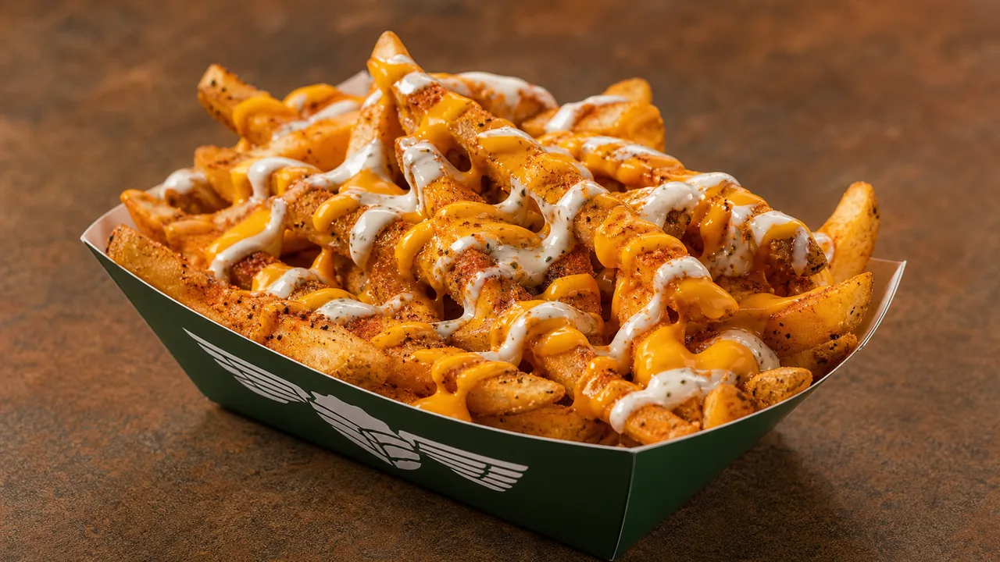

MENU GUIDE
Wingstop Fries and Sides Guide: Compare Every Side

Wingstop sides are not interchangeable. Seasoned Fries keep the meal familiar, Louisiana Voodoo Fries turn the side into a rich shared dish, and Cajun Fried Corn adds texture without another serving of potatoes. The right choice depends on the wings beside it and how long the order will travel.
The Wingstop Side Ranking
- Seasoned Fries: best everyday solo choice.
- Louisiana Voodoo Fries: best rich side for sharing.
- Cajun Fried Corn: best contrast and travel option.
- Buffalo Ranch Fries: best for diners who specifically want heat and toppings.
- Veggie sticks: best functional reset beside very hot wings.
Seasoned Fries Set the Baseline
Seasoned Fries are the side to choose when the wing flavors deserve most of the attention. Their sweet-savory seasoning works with Lemon Pepper, Original Hot and barbecue-style sauces without copying any one of them. Wingstop lists regular and large sizes on current local product pages, and some locations allow seasoning adjustments.
Regular is the correct solo size in most combos. Large makes sense for sharing, not simply because it has a better unit price. Pair fries with the best Wingstop combo when you want a complete first order.
Loaded Fries Work Best for Sharing
Louisiana Voodoo Fries combine Cajun seasoning, cheese sauce and ranch. That makes them more than an upgraded plain fry: they are rich enough to compete with the wings. Share them beside Lemon Pepper, Original Hot or another flavor with acidity or heat. Avoid stacking them beside Garlic Parmesan wings unless the goal is an intentionally heavy meal.
Buffalo Ranch Fries push the side toward tangy heat. They fit a mild wing order better than a box already dominated by hot sauce. Loaded fries also lose crispness faster, so pickup is preferable when texture matters.

Cajun Fried Corn Deserves Its Own Lane
Cajun Fried Corn is the strongest non-potato side. It adds seasoned, juicy texture and avoids the steam problem that affects fries in a closed delivery bag. Choose it beside Garlic Parmesan, Mango Habanero or a multi-flavor group pack where another tray of fries would feel repetitive.
Veggie sticks serve a different purpose. They are not competing with loaded fries for indulgence; they provide cold crunch beside Atomic or Mango Habanero. The ranch and dips guide explains which dip makes those pairings work.
Best Side Pairings by Wing Flavor
- Lemon Pepper: Seasoned Fries or Voodoo Fries.
- Original Hot: Seasoned Fries, Cajun Fried Corn or veggie sticks.
- Garlic Parmesan: Cajun Fried Corn or veggie sticks to avoid duplicated richness.
- Mango Habanero: Seasoned Fries or veggie sticks for a neutral reset.
- Atomic: veggie sticks and ranch before any loaded side.
- Hickory Smoked BBQ: Cajun Fried Corn to move away from sweetness.
Use the Wingstop flavor guide when choosing the wings first, then return to this list for the side.
Ready-Made Side Orders
Solo combo
Regular Seasoned Fries and one ranch. This keeps the order balanced and easy to finish.
Order for two
One Louisiana Voodoo Fries to share plus Cajun Fried Corn when the wings are the only main course.
Group order
Use one large fry and one contrasting side before adding a second tray of potatoes. Our Wingstop party-pack guide provides quantities for larger groups.
Keep Sides Better During Pickup and Delivery
Fries deteriorate before wings because steam softens the exterior. Choose pickup, minimize travel time and open the bag shortly after arrival. Loaded fries tolerate softness better because toppings already dominate their texture, but they become heavier as they sit. Cajun Fried Corn is the safer long-drive choice.
For calorie, sodium or allergen planning, consult the current Wingstop nutrition guide and allergen information. Published values and ingredients can vary by serving size and customization.
FAQ
What is the best Wingstop side?
Seasoned Fries are the best everyday solo side. Louisiana Voodoo Fries are the best shared side, and Cajun Fried Corn provides the strongest non-potato contrast.
What are Louisiana Voodoo Fries?
They are fries topped with Cajun seasoning, cheese sauce and ranch.
Should I order regular or large fries?
Choose regular for one person and large when two or more people are genuinely sharing.